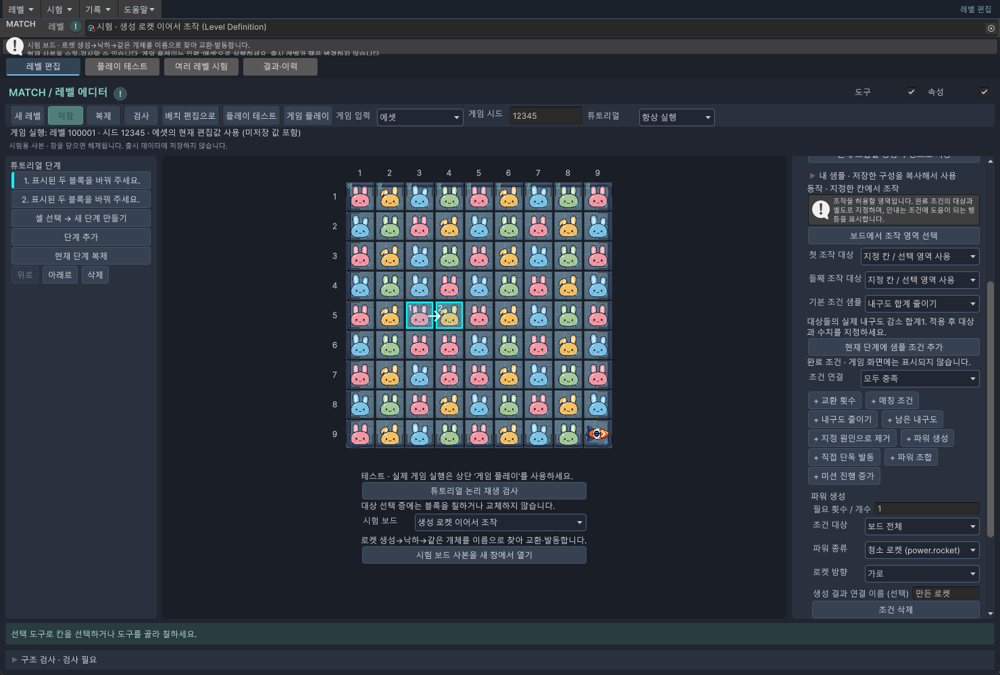
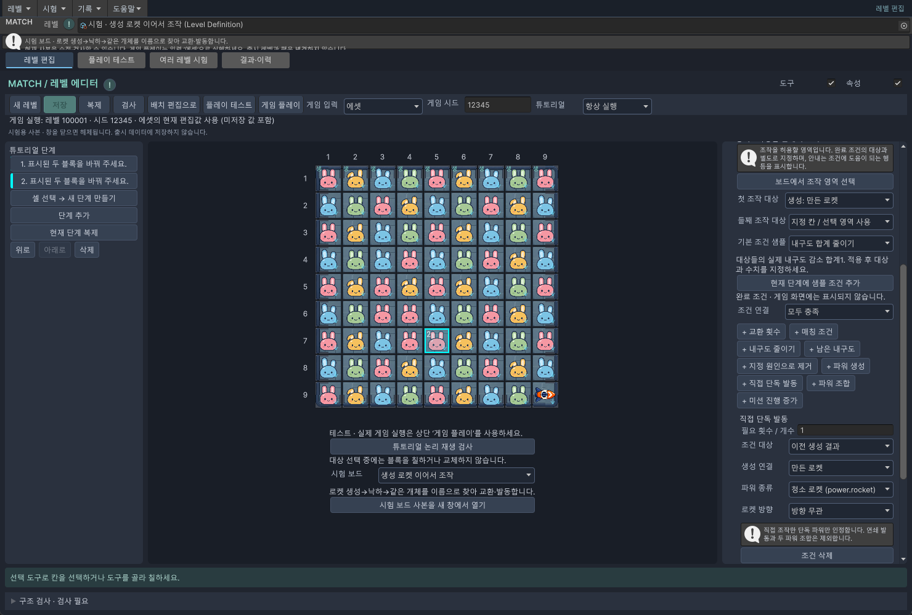

추가 · 튜토리얼 따라하기
② 파워 만들고 사용하기
새로 만든 로켓에 이름표를 붙이면, 떨어진 뒤에도 같은 로켓을 찾을 수 있습니다.
준비 시험 보드를 여는 방법을 먼저 확인하세요. 사진 속 행·열은 보드 가장자리의 1~9 숫자를 기준으로 읽습니다.
두 장의 안내를 이어 붙입니다
처음부터 로켓이 놓인 보드와, 플레이 중에 생긴 로켓은 선택 방법이 다릅니다. 새 로켓에는 “만든 로켓”이라는 이름표를 붙여 다음 단계에서 찾습니다.
- 시험 보드에서 생성 로켓 이어서 조작을 고르고 시험 보드 사본을 새 창에서 열기를 누릅니다.
- 왼쪽에는 1단계와 2단계가 준비되어 있습니다. 먼저 각 단계를 눌러 아래 설정과 비교해 보세요.
- 직접 처음부터 만들고 싶다면 이 시험 창에서만 2단계와 1단계를 삭제합니다. 보드는 그대로 두고 아래 순서로 두 단계를 만듭니다.
이 예제는 5행 3열을 5행 4열과 바꿔 세로로 4개를 맞추고 가로로 발사되는 청소 로켓을 만듭니다. 현재 게임의 로켓 방향 규칙입니다.
1. 로켓을 만드는 단계
- 셀 선택 → 새 단계 만들기를 누릅니다. 5행 3열 → 5행 4열 순서로 클릭합니다.
- 샘플 지정한 두 칸 교환을 골라 새 단계로 적용합니다.
- 오른쪽의 기존 교환 횟수 조건 아래 조건 삭제를 누릅니다. 왼쪽의 단계 삭제와 다른 버튼입니다.
- + 파워 생성을 누르고 아래 값을 넣습니다.
| 항목 | 값 |
|---|---|
| 필요 횟수 / 개수 | 1 |
| 조건 대상 | 보드 전체 |
| 파워 종류 | 청소 로켓 (power.rocket) |
| 로켓 방향 | 가로 |
| 생성 결과 연결 이름 (선택) | 만든 로켓 |
안내 문구에는 “분홍 달토끼를 오른쪽으로 옮겨 로켓을 만들어 주세요.”라고 적고, 대상과 조작 셀 자동 강조를 체크합니다.

2. 방금 만든 로켓을 쓰는 단계
새 로켓을 집는 설정과, 그 로켓이 실제 사용됐는지 확인하는 설정을 둘 다 연결합니다.
- 셀 선택 → 새 단계 만들기를 누르고 이번 시험 보드의 7행 4열 → 7행 5열을 고릅니다. 지정한 두 칸 교환 → 새 단계로 적용으로 2단계를 만듭니다.
- 오른쪽 첫 조작 대상을 생성: 만든 로켓으로 바꿉니다. 둘째 조작 대상은 지정 칸 / 선택 영역 사용으로 둡니다. 이 예제의 둘째 칸은 7행 5열입니다.
- 기존 교환 횟수 조건을 조건 삭제하고 + 직접 단독 발동을 누릅니다.
- 아래 표대로 조건을 입력합니다. 안내 문구는 “만든 로켓을 오른쪽 블록과 바꿔 사용해 주세요.”로 적습니다. 대상과 조작 셀 자동 강조를 체크합니다.
| 항목 | 값 | 뜻 |
|---|---|---|
| 필요 횟수 / 개수 | 1 | 한 번 사용하면 완료 |
| 조건 대상 | 이전 생성 결과 | 앞 단계에서 만든 것을 검사 |
| 생성 연결 | 만든 로켓 | 같은 이름표 선택 |
| 파워 종류 | 청소 로켓 (power.rocket) | 로켓 사용 확인 |
| 로켓 방향 | 방향 무관 | 이 단계는 사용했는지만 확인 |

첫 조작 대상과 완료 조건의 생성 연결이 모두 만든 로켓이면 연결이 끝났습니다. 편집 보드는 시작 배치를 보여 줍니다. 2단계를 눌렀는데 보드에 새 로켓이 아직 안 보이는 것은 정상입니다.
폭탄·드론·자석도 같은 방식입니다
| 시험 보드 | 만드는 모양 | 바꿀 항목 |
|---|---|---|
| 가로 로켓 생성 | 세로 4매칭 | 청소 로켓 · 가로 |
| 세로 로켓 생성 | 가로 4매칭 | 청소 로켓 · 세로 |
| 폭탄 생성 | 꺾인 5매칭 | 파워 종류에서 폭탄 계열 선택 |
| 드론 생성 | 2×2 매칭 | 파워 종류에서 드론 계열 선택 |
| 자석 생성 | 가로 5매칭 | 파워 종류에서 자석 계열 선택 |
각 시험 보드를 열면 맞는 배치와 생성 조건을 살펴볼 수 있습니다. 이어서 쓰게 하려면 “만든 폭탄”처럼 이름표를 붙이고, 다음 단계의 조작과 완료 조건에서 같은 이름을 선택합니다. 7행 5열은 위 로켓 시험 보드 전용입니다. 다른 보드에서는 낙하 후 실제 이웃 칸을 정해야 합니다.
이미 놓여 있는 로켓을 쓰는 연습은 로켓 직접 단독 발동 시험 보드로 시작하세요. 새로 만든 물건이 아니므로 생성 이름표 대신 보드에서 로켓과 이웃한 일반 블록을 고르면 됩니다.
파워 두 개를 합치는 학습은 + 파워 조합을 사용합니다. 직접 단독 발동은 두 파워 조합이나 자동 연쇄 발동을 세지 않습니다.
3. 두 단계를 처음부터 시험하기
- 튜토리얼 논리 재생 검사로 두 단계가 이어지는지 확인합니다.
- 게임 입력 = 에셋, 튜토리얼 = 항상 실행에서 게임 플레이를 누릅니다.
- 로켓을 만들고, 낙하를 기다립니다. 다음 안내가 움직인 로켓을 가리키는지 확인합니다.
- 로켓과 이웃 블록을 교환합니다. 로켓이 발사되고 튜토리얼이 끝나야 합니다.
샘플로 보관할 때는 전체 흐름을 내 샘플로 저장하세요. 2단계만 저장하면 “만든 로켓”이라는 앞 단계의 이름표가 없어집니다. 작업 레벨의 배치와 신규 블록 공급도 따로 맞춰야 합니다.
변경 이력 · 확인 범위
2026-10-08 · 추가 · 짧은 기능 소개에서 실제 선택 순서·입력값·변경·확인 방법을 갖춘 예제로 확장했습니다. 사용자 요청에 따른 초보자용 안내입니다.
Windows / Unity 6000.3.10f1. 임시 시험 보드의 실제 에디터 화면 캡처와 논리 재생을 확인했습니다. 실기기 터치 검사는 이번 문서 작업에 포함하지 않았습니다. 화면 속 시험 보드는 출시 레벨을 변경하지 않습니다.
문서 표시 확인 · 2026-10-08 · Chrome 1440px / 390px · 내부 링크·이미지 정상. 폴더 복사 후 오프라인 파일 열기와 목차 왕복 확인.